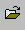
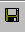
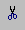
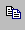
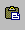

|
|
|---|
New This will start a new map.
Open This will open an existing map.
Save This will save your map.
Cut This will delete a highlighted item.
Copy This will copy a highlighted item.
Paste This will paste your copied item.
About This will give you some important information about Tread3D.